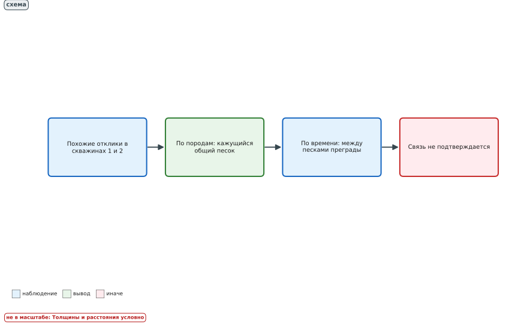
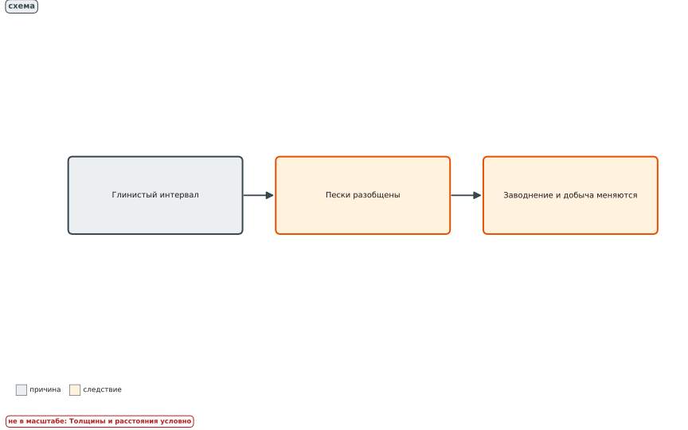

Похожий отклик каротажа ещё не означает связи двух песков.
Выбор корреляции меняет прогноз заводнения и одиночной добычи.
Пороговая идея. Одинаковая порода в двух скважинах не доказывает одновременность её отложения или гидравлическую связь. модель
Анимация: как это происходит


1 / 6
Два участка имеют похожие отклики.
Не в масштабе: Толщины и расстояния (условно). Допущения: Геометрия и шкалы, если есть, условные; схема не оцифрована из книги..
Как это работает
Механизм
Клиноформы представляют линии геологического времени и пересекают границы, проведённые по породам. В условном примере сопоставлены интервалы либо по сходству каротажа, либо по времени отложения. стр. 410
«It is important for proper subsurface correlations to understand that clinoforms, which represent geological time lines, crosscut lithostratigraphic boundaries»
«The hypothetical example in Fig. 9.10 shows correlations based upon lithofacies (stratigraphic intervals with similarities in well log response) and upon geological time»
схема
Сходный отклик → Корреляция по времени → Разобщённые пески.
Класс B · схема · нарисовано кодом · стр. 410
Как это видно
Глинистые и неоднородные отложения разделяют пески, поэтому между скважинами 1 и 2 нет связи. На временном разрезе между песками видны неоднородные и глинистые слои, хотя на разрезе по породам пески кажутся непрерывными. стр. 410
«Note that shaley and heterolithic intervals separate sandy intervals, so that the sands between wells 1 and 2 are not in communication»
«Note the heterolithics and shales that separate sands in the chronostratigraphic correlation compared with the continuity of the sands in the lithostratigraphic correlation»
Практика
Разобщение песков ухудшает эффективность заводнения и продуктивность отдельной скважины. стр. 410
«This feature will adversely affect waterflood performance as well as single-well productivity»
Разбор примеров из книги по книге
Два варианта одного разреза стр. 410
Условие. Каротаж и предполагаемые линии возраста в двух скважинах.
Сопоставить похожие песчаные интервалы по каротажу.
Пересопоставить с учётом наклонных линий времени.
Проверить, лежат ли между песками глинистые и неоднородные отложения.
Итог. Сходные пески между скважинами 1 и 2 разобщены.
Решение на данных
Как применить правило
Признаки
Сходный отклик
Корреляция по времени
↓
Правило
Похожий отклик каротажа ещё не означает связи двух песков. стр. 410
↓
Вывод
Выбор корреляции меняет прогноз заводнения и одиночной добычи.
Потренируйтесь
Дано: Почему пески между этими скважинами не сообщаются? (Пример из учебного узла)
Пески обособлены глинистыми и неоднородными интервалами.
Частая ошибка модель
✗Ошибка: Если пески выглядят одинаково, вода свободно проходит от одной скважины к другой.
✓На самом деле: В примере между песками лежат барьеры, видимые при корреляции по времени. стр. 410
Что это значит для данных по книге
Сравнивают две корреляции разрезов скважин: по сходству отклика и по времени отложения; на второй проверяют расположение преград.
Вход
Каротаж и предполагаемые линии возраста в двух скважинах.
Выход
На временном разрезе между песками видны неоднородные и глинистые слои, хотя на разрезе по породам пески кажутся непрерывными.
Где ломается
Наблюдаемое сходство каротажа не гарантирует сообщения между песками. В примере разобщение важно и для заводнения, и для отдельной скважины.
Где здесь ручной труд специалиста
Входные данные
Каротаж и предполагаемые линии возраста в двух скважинах.
Ручные шаги
Сравнивают две корреляции разрезов скважин: по сходству отклика и по времени отложения; на второй проверяют расположение преград.
Точки суждения
Наблюдаемое сходство каротажа не гарантирует сообщения между песками. В примере разобщение важно и для заводнения, и для отдельной скважины.
Время
Глава не оценивает трудозатраты; время зависит от объёма проверки и качества исходных наблюдений.
Типичные ошибки
Если пески выглядят одинаково, вода свободно проходит от одной скважины к другой.
Аналогия модель
Соединение записей по похожим атрибутам может дать пары, отличные от соединения по времени событий.
Где аналогия перестаёт работать: В породах нет полного журнала времени; поверхности приходится интерпретировать.
Рисунки книги к этому шагу по книге
Рис. 9.10. FIGURE 9.10 Lithostratigraphic (upper) and chronostratigraphic (lower) correlation across two wells in a prograding delta system. Note the heterolithics and shales that separate sands in the chronostratigraphic correlation compared with the continuity of the sands in the lithostratigraphic correlation. After Gani and Bhattacharya (2005). стр. 410(не перерисован — смотрите в книге)
Новые понятия
клиноформа (clinoform)
Наклонная поверхность, рассматриваемая здесь как линия равного геологического времени на разрезе стр. 410
каротаж (well logging)
Измерения вдоль ствола скважины стр. 410модель
заводнение (waterflood)
Закачка воды для вытеснения нефти стр. 410модель
корреляция (correlation)
Сопоставление интервалов в разных разрезах стр. 410модель
Проверь себя
Один ответ
Верный ответ: Между ними глинистые и неоднородные отложения
Все утверждения шага с дословной цитатой автора и страницей книги (по PDF).
Клиноформы представляют линии геологического времени и пересекают границы, проведённые по породам. наблюдение
«It is important for proper subsurface correlations to understand that clinoforms, which represent geological time lines, crosscut lithostratigraphic boundaries»
В условном примере сопоставлены интервалы либо по сходству каротажа, либо по времени отложения. наблюдение
«The hypothetical example in Fig. 9.10 shows correlations based upon lithofacies (stratigraphic intervals with similarities in well log response) and upon geological time»
Глинистые и неоднородные отложения разделяют пески, поэтому между скважинами 1 и 2 нет связи. наблюдение
«Note that shaley and heterolithic intervals separate sandy intervals, so that the sands between wells 1 and 2 are not in communication»
Разобщение песков ухудшает эффективность заводнения и продуктивность отдельной скважины. вывод
«This feature will adversely affect waterflood performance as well as single-well productivity»
На временном разрезе между песками видны неоднородные и глинистые слои, хотя на разрезе по породам пески кажутся непрерывными. наблюдение
«Note the heterolithics and shales that separate sands in the chronostratigraphic correlation compared with the continuity of the sands in the lithostratigraphic correlation»
Исходный текст урока
Стр. 410 · (начало фрагмента)
It is important for proper subsurface correlations to understand that clinoforms, which represent geological time lines, crosscut lithostratigraphic boundaries. The hypothetical example in Fig. 9.10 shows correlations based upon lithofacies (stratigraphic intervals with similarities in well log response) and upon geological time. Note that shaley and heterolithic intervals separate sandy intervals, so that the sands between wells 1 and 2 are not in communication. This feature will adversely affect waterflood performance as well as single-well productivity.
Стр. 410 · (начало фрагмента)
**FIGURE 9.10** Lithostratigraphic (upper) and chronostratigraphic (lower) correlation across two wells in a prograding delta system. Note the heterolithics and shales that separate sands in the chronostratigraphic correlation compared with the continuity of the sands in the lithostratigraphic correlation. After Gani and Bhattacharya (2005).